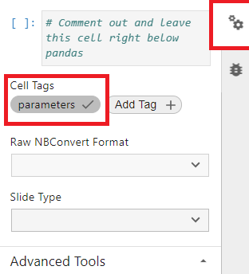

Getting Notebooks Ready for the Portfolio#
Depending on the complexity of your visualizations, you may want to produce a full website composed of multiple notebooks and/or the same notebook that is rerun across different parameters.
For these situations, the Jupyter Book-based publishing framework present in the data-analyses repo is your friend. You can find the Cal-ITP Analytics Portfolio at analysis.calitp.org.
We want all the content in our portfolio to be consistent. Below are guidelines for you to follow when creating the Jupyter Notebooks.
Narrative#
Narrative content can be done in Markdown cells or code cells.
Markdown cells should be used when there are no variables to inject.
Code cells should be used to write narrative whenever variables constructed from f-strings are used.
Markdown cells can inject f-strings if it’s plain Markdown (not a heading) using
display(Markdown())in a code cell.from IPython.display import Markdown display(Markdown(f"The value of {variable} is {value}."))
Use f-strings to fill in variables and values instead of hard-coding them.
Turn anything that runs in a loop or relies on a function into a variable.
Use functions to grab those values for a specific entity (operator, district), rather than hard-coding the values into the narrative.
n_routes = (df[df.organization_name == operator] .route_id.nunique() ) n_parallel = (df[ (df.organization_name == operator) & (df.parallel==1)] .route_id.nunique() ) display( Markdown( f"**Bus routes in service: {n_routes}**" "<br>**Parallel routes** to State Highway Network (SHN): " f"**{n_parallel} routes**" ) )
Stay away from loops if you need to use headers.
You will need to create Markdown cells for headers or else JupyterBook will not build correctly. For parameterized notebooks, this is an acceptable trade-off.
For unparameterized notebooks, you may want use
display(HTML()).Caveat: Using
display(HTML())means you’ll lose the table of contents navigation in the top right corner in the JupyterBook build.
Writing Guide#
These are a set of principles to adhere to when writing the narrative content in a Jupyter Notebook. Use your best judgment to decide when there are exceptions to these principles.
Decimals less than 1, always prefix with a 0, for readability.
0.05, not .05
Integers when referencing dates, times, etc
2020 for year, not 2020.0. Ccoerce to int64 or Int64 in
pandas; Int64 are nullable integers, which allow for NaNs to appear alongside integers.1 hr 20 min, not 1.33 hr. Use your best judgment to decide what’s easier for readers to interpret.
Round at the end of the analysis. Use best judgment to decide on significant digits. National Institutes of Health has a guide on Rounding Rules.
Too many decimal places give an air of precision that may not be present.
Too few decimal places may not give enough detail to distinguish between categories or ranges.
A good rule of thumb is to start with 1 extra decimal place than what is present in the other columns when deriving statistics (averages, percentiles), and decide from there if you want to round up.
An average of
$100,000.0can simply be rounded to$100,000.An average of 5.2 miles might be left as is.
Additional references we recommend are from the American Psychological Association (APA) and Purdue University.
Standard Names#
GTFS data in our warehouse stores information on operators, routes, and stops.
Analysts should reference route name and Caltrans district the same way across analyses.
Caltrans District: 7 should be referred to as
07 - Los AngelesBetween
route_short_name,route_long_name,route_desc, which one should be used to describeroute_id? Useshared_utils.portfolio_utils, which relies on regular expressions, to select the most human-readable route name.
Use
shared_utils.portfolio_utilsto help you grab the right names to use. Sample code below.from shared_utils import portfolio_utils route_names = portfolio_utils.add_route_name() # Merge in the selected route name using route_id df = pd.merge(df, route_names, on = ["calitp_itp_id", "route_id"] )
Accessibility#
It’s important to make our content as user-friendly as possible. Here are a few things to consider.
Use a color palette that is color-blind friendly. There is no standard palette, so use your best judgement. There are many palettes online such as these ones from the University of California, Santa Barbara for you to choose from.
Add tooltips to your visualizations.
Add
.interactive()behindAltaircharts which allow viewers to zoom in and out.
Headers#
Consecutive Order#
Headers must move consecutively in Markdown cells or the parameterized notebook will not generate. No skipping!
# Notebook Title
## First Section
## Second Section
### Another subheading
To get around consecutive headers, you can use display(HTML()).
display(HTML(<h1>First Header</h1>) display(HTML(<h3>Next Header</h3>))
Page Titles#
Markdown cells of the H1 type creates the titles of our website, not the .yml file. Let’s use SB125 Route Illustrations to demonstrate this.

Last Checks#
Your notebook is all ready to be published. However, it never hurts to do some final checks once more.
All your values are formatted properly. Currencies should have $ and percentages should have %.
The titles of your visualizations make sense and have the correct capitalizations.
The legends of your visualizations are not cutoff horizontally or vertically. If you have many values in your legend, Altair will truncate them.
The values in your visualizations are sorted properly. For example, if you use the string column of
monthwith values January, February, etc in the x-axis of an Altair chart, Altair will sort these months alphabetically.If you are displaying a Pandas dataframe, consider styling it. You can look through the Pandas’ website for inspiration. We also have a function in our
portfolio_utilsthat styles and formats a dataframe.Look at your notebook(s) on your laptop versus a monitor.
Getting Ready for Parameterization#
If you plan to rerun the same Jupyter Notebook over a set of different parameters, you need to setup your Jupyter Notebook in a particular way.
Packages to include#
Copy and paste this code block below as shown for every notebook for the portfolio. Order matters, %%capture must go first.
%%capture
import warnings
warnings.filterwarnings('ignore')
import calitp_data_analysis.magics
# All your other packages go here
import pandas as pd
import utils
Capturing Parameters#
When parameterizing a notebook, there are 2 places in which the parameter must be injected. Let’s say you want to run your notebook twelve times for each of the twelve Caltrans districts. The column district is the parameter.
Header#
The first Markdown cell must include parameters to inject. Using the same example above, you could set your header Markdown cell to be # District {district} Analysis which would generate the title District 1 Analysis for District 1.
Please note:
The site URL is constructed from the original notebook name and the parameter in the JupyterBook build:
0_notebook_name__district_x_analysis.htmlThis Markdown cell also creates the navigation on the lefthand side. Without this, the notebooks will be parameterized but then there’d be no table contents to list out the pages for people to see.
Any styling (italicizing, bolding, changing the colors) you use in the markdown cell below will reflect in the Table of Contents.
Below, you can see District 1: Eureka is displayed as the first header and is also the page’s name in the Table of Content. Observe that the because the
# Districtis bolded, the names on the left bar are also bolded.
Code Cell#
You will need to create two separate code cells that take on the parameter. Let’s use district as an example parameter once again.
Code Cell #1
Add in your parameter and set it equal to any valid value.
Comment out the cell.
This is how your code cell must look.
# district = "4"Turn on the parameter tag: go to the code cell go to the upper right hand corner -> click on the gears -> go to “Cell Tags” -> Add Tag + -> add a tag called “parameters” -> click on the new “parameters” tag to ensure a checkmark shows up and it turns dark gray.

Code Cell #2
Input the same parameter without an assigned value with
%%capture_parametersat the top.%%capture_parameters district
Even commented out code before
%%capture_parameterswill cause the parameterization process to fail.# This notebook will fail to parameterize because here's a comment. # Here's another comment. %%capture_parameters district
Notes
You can add more code like this sample below, just as long as
%%capture_parametersstill remains the first line of code in the cell.%%capture_parameters human_date = analysis_date.strftime('%B %d %Y (%A)') human_date
You can have multiple
%%capture_parameterscell in your notebook like this example.
If you’re using a heading, you can either use HTML or capture the parameter and inject#
HTML - this option works when you run your notebook locally.
from IPython.display import HTML display(HTML(f"<h3>Header with {variable}</h3>"))